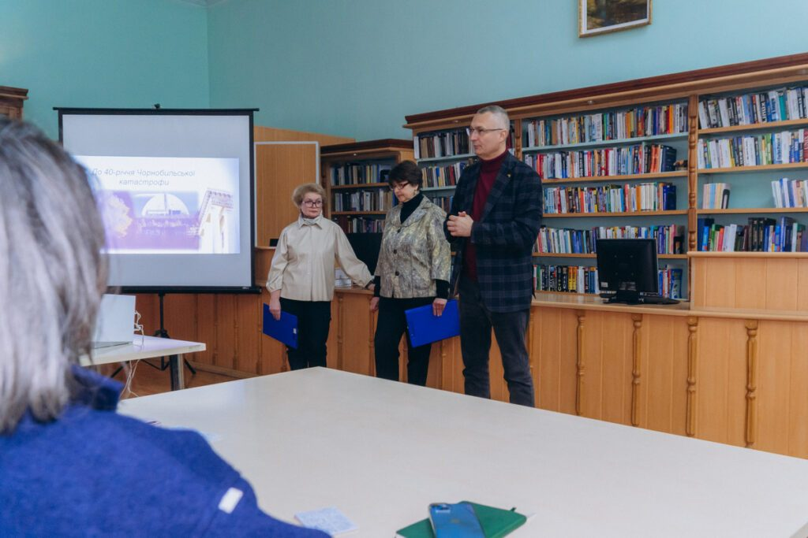

Бібліотека
Науково-технічна бібліотека, читальні зали, електронний каталог, репозиторій та цифрові інформаційні ресурси.
Науково-технічна бібліотека, якій більше 125 років
Бібліотеку засновано у 1899 році разом з університетом — це одна з найдавніших бібліотек Придніпров'я і бібліотека першої категорії серед закладів вищої освіти України. Її фонд щорічно поповнюється на приблизно 20 тисяч друкованих примірників, а передплата охоплює понад 400 назв періодичних видань, включно з реферативними журналами в електронному вигляді.
Сьогодні бібліотека — це не лише читальні зали, а й повноцінна цифрова інфраструктура: електронний каталог, інституційний репозиторій та сервер медіаресурсів університету.

Захід до 40-річчя Чорнобильської катастрофи в приміщенні Науково-технічної бібліотеки НТУ «Дніпровська політехніка», якій понад 125 років.
Наскільки великий бібліотечний фонд
Читальні зали та абонементи
Технічна та наукова література
Студентська читальна зала для роботи з підручниками, посібниками та науковими виданнями за фахом.
Гуманітарна та економічна
Окрема зала для літератури з економіки, права, філології та суспільних наук.
Зала для викладачів
Робочий простір для науково-педагогічних працівників із доступом до фахових видань.
Абонемент
Видача наукової, технічної та художньої літератури студентам і викладачам додому.
Бібліотека доступна онлайн 24/7
| Сервіс | Що там знайти |
|---|---|
| Електронний каталог бібліотеки | Пошук книг, підручників і періодики у фондах з детальним бібліографічним описом. |
| Інституційний репозиторій НТУ «Дніпровська політехніка» | Відкритий електронний архів: наукові праці, кваліфікаційні (дипломні) роботи, матеріали конференцій, наукова періодика університету. |
| Сервер медіаресурсів | Зберігання відео- та аудіоматеріалів, пов'язаних із навчальним і науковим процесом. |
| Консультації з оформлення робіт | Допомога з визначенням індексу УДК, бібліографічними посиланнями та списками для курсових і дипломних робіт. |
Потрібна книга або консультація бібліографа?
Скористайся електронним каталогом і репозиторієм онлайн або звернись до бібліотеки за довідкою щодо оформлення курсової чи дипломної роботи.
Написати бібліотеці